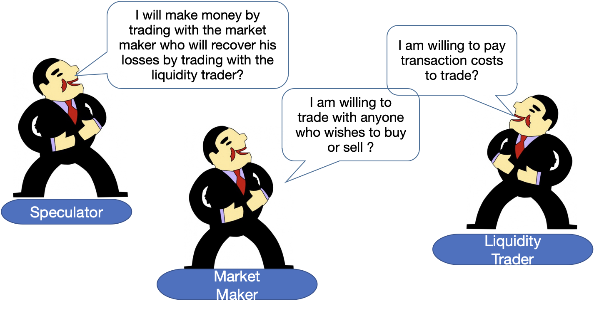

A Teach-In Event for the FCA Tech Sprint on Market Abuse Surveillance
Source: London Stock Exchange Group, “Annual Report 2020”
Source: London Stock Exchange Group, “FTSE 100 Index Factsheet”
Source: Bank for International Settlements (BIS), “Triennial Central Bank Survey of Foreign Exchange and Over-the-counter (OTC) Derivatives Markets in 2019”

The model assumes that:
Given these assumptions, the market maker’s pricing rule is:
\(P_t = E[V | X_1, X_2, ..., X_{t-1}]\)
This means that the market maker sets the price equal to the expected value of the asset conditional on the history of trades.
Using Bayes’ rule, we can express the price as:
\(P_t = \frac{P(X_1, X_2, ..., X_{t-1} | V = V_H) \cdot P(V = V_H)}{P(X_1, X_2, ..., X_{t-1})}\)
The bid-ask spread at time \(t\) is given by:
\(S_t = P_t^a - P_t^b = \frac{\mu(1 - \lambda)}{\mu(1 - \lambda) + (1 - \mu)/2} (V_H - V_L)\)
where \(P_t^a\) is the ask price and \(P_t^b\) is the bid price.
The key insights from this formalization are:
Barry Quinn PhD CStat
Senior Lecturer of Finance, Technology & Data Science